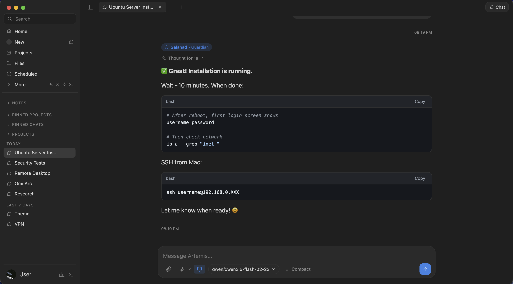
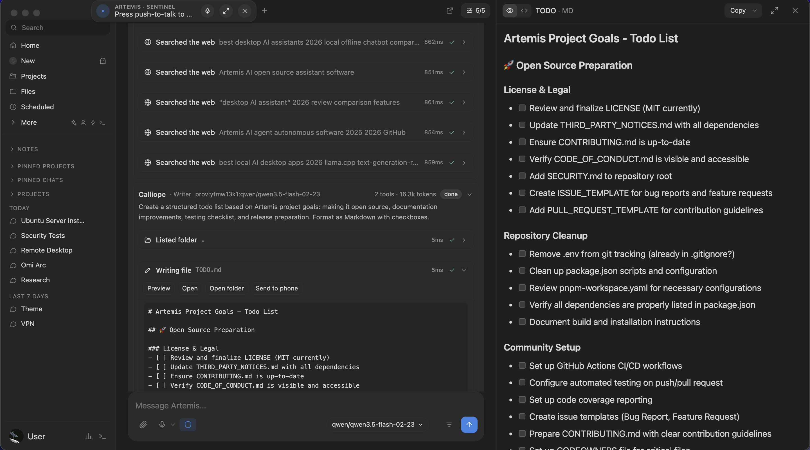
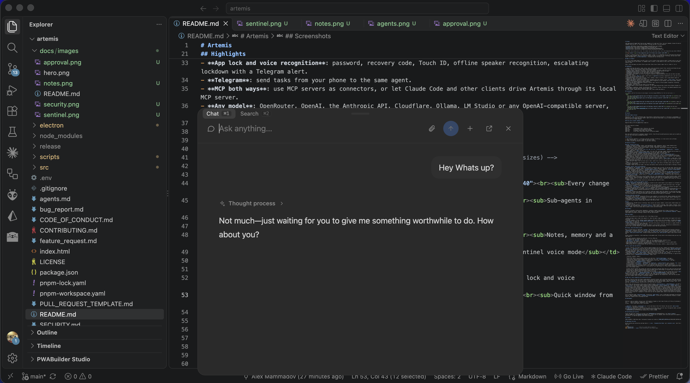
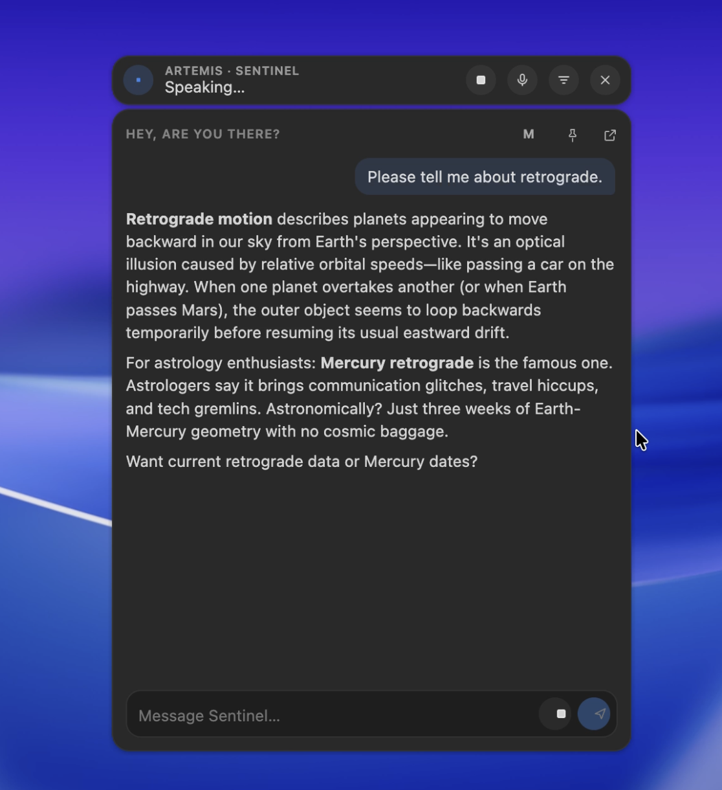
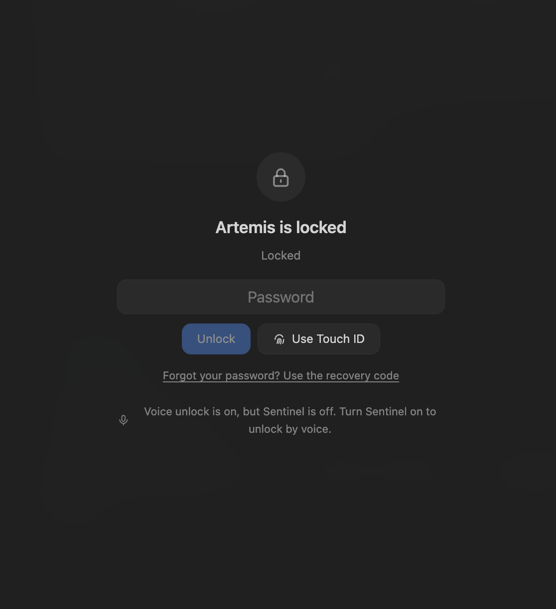

#1 AGENT
Does The Work
Reads your files. Writes them. Edits them. Searches the web. Stays inside the project folder and asks before it changes anything.
Not a chatbot in a browser tab. Artemis lives on your computer, reads your files, runs your commands and remembers what you told it. You pick the model. You keep the data. You press approve.
Free · AGPL-3.0 licensed · No account
AGPL-3.0
Free. No catch.
70
Tools built in
4
Agents at once
Any
Model you bring





It is not a chat window glued to one API. It is not a copilot stuck inside an editor.
Artemis lives on your computer. It works in your files, your terminal and your browser. It remembers what it learns. It asks before it acts. Pick any model, cloud or local, and it does the job.
Chats, notes and memory stay on your disk. Every line of code is open. Fork it, break it, fix it.
One app. Every tool group has an off switch.
#1 AGENT
Reads your files. Writes them. Edits them. Searches the web. Stays inside the project folder and asks before it changes anything.
#2 OFFICE FILES
Excel, CSV, Word, PDF. It reads them all, and writes spreadsheets with real formulas. Drop a file in and ask.
#3 COMPUTER
On macOS it looks at your screen, moves the mouse and types. It asks once per task. One shortcut stops it dead.
#4 BROWSER
Tabs with their own saved logins. The agent reads, clicks and fills pages. Your everyday browser stays out of it.
#5 TERMINAL
Runs commands in your shell and reads a live terminal. A blocklist catches the obvious disasters. It is not a sandbox. Read before you approve.
#6 SUB-AGENTS
One task, four workers. Each has a role, a model and only the tools it needs. Write your own in Markdown.
#7 BRAINS
Lancelot, Galahad, Gawain. Different personalities on different models. Ask one, or let them vote on who answers.
#8 SKILLS
Do it once. Save it as a skill. Artemis reuses it and improves it. Plain SKILL.md folders, the same layout as agentskills.io.
#9 AUTOMATIONS
Schedule any prompt: once, every N minutes, daily, weekly, monthly. Pick a cheap model for it. The result lands on your phone. Build Make.com scenarios by asking.
#10 MEMORY
Not just one chat. Every chat. Facts it keeps, notes in plain Markdown, [[wiki links]] and a graph. No cloud vault.
#11 PROJECTS
A project is instructions plus a folder. Chats attach to it. Moving from ChatGPT or Claude? Import your history.
#12 TELEGRAM
Message it from your phone. Same agent, same memory, same projects. Ask for a screenshot of your desktop.
#13 VOICE
Wake word or push-to-talk. Speech recognition runs on your machine. It talks back through local voices like Piper, Kokoro and Chatterbox.
#14 SECURITY
Password, recovery code, Touch ID. Offline voice recognition that answers only you. A stranger gets one line: Unauthorized access.
#15 PROVIDERS
OpenRouter, OpenAI, the Anthropic API, Cloudflare, Ollama, LM Studio, or anything that speaks the OpenAI API. No default provider. No lock-in. Daily and monthly spend limits.
#16 MCP
Plug MCP servers in as connectors. Or let Claude Code drive Artemis through its own local MCP server: 127.0.0.1 only, bearer token.
#17 SHORTCUTS
Quick chat and quick search from any app. A command palette. Tabs, split view, find in every chat and note. Shortcuts you set yourself.
#18 LOCAL
Chats, notes and memory are files on your machine. Keys sit in your OS keychain. Writes are atomic and backed up.
Artemis splits a job and hands the parts to role agents. Four run at once. Each gets only the tools its role needs.
Write your own as a Markdown file. Name, role, instructions, model, tools. Keep it private or inside a project.
Researcher · finds and checks facts
Coder · small, careful changes
Writer · emails, docs, posts
Reviewer · checks the others, read-only
An agent with your files and your shell is powerful. So it comes with rules.
APPROVALS
Edits, moves, deletes, shell, screen control. You see a card and you decide. Deletes always ask.
CONFINED
File tools cannot leave the project. Not with .. and not with symlinks. Credentials and browser profiles ask every single time.
UNTRUSTED INPUT
Web pages, files and screenshots are treated as untrusted. Prompt injection is still unsolved. Read what you approve.
HONEST LIMITS
The terminal blocklist is not a sandbox. The app lock is not disk encryption. Releases are unsigned. We say it here so you do not find out later.
No waitlist. No demo call. No account. Plain JavaScript on Electron, React and Vite. You add your own model provider and that is it.
Tests are plain Node scripts that run without Electron. Keep pull requests small. agents.md explains how it is built.
# Node.js 20+ and pnpm
git clone https://github.com/orbixtechteam/Artemis.git artemis
cd artemis
pnpm install
pnpm dev # Vite + Electron, hot reload
pnpm start # build and run
pnpm test # unit tests, no Electron
pnpm dist # macOS arm64 .dmg (unsigned)Free and AGPL-3.0 licensed. Ready-made app for Apple silicon. Windows and Linux run from source.
Yes. AGPL-3.0 licensed. The only bill is the model provider you choose. Local models cost nothing.
Anything that speaks the OpenAI API: OpenRouter, OpenAI, the Anthropic API, Cloudflare, Ollama, LM Studio and more. Add as many providers as you like. Pick a model per chat, per sub-agent or per scheduled task.
Yes. Ollama, LM Studio or any local server. Tools need a model that supports tool calling. Small models cope better with fewer tools turned on, and Ollama needs a bigger context length than its default.
On your computer. Chats, notes and memory are local files. API keys and tokens are encrypted with your OS keychain.
Only what you allow. File tools stay in the project folder. Writes, deletes, terminal and computer control ask first. Every tool group can be switched off in Settings.
As safe as the approvals you read. The terminal blocklist is not a sandbox, and web pages and files can hide instructions meant to trick a model. Keep approvals on. Start in a test folder.
Yes, through Telegram. Pair a private chat and talk to the same agent. Artemis keeps running in the tray.
Set a password in Settings, Security. Artemis can lock at start, when idle and when the Mac sleeps. Unlock with Touch ID, your password or your voice. Speaker recognition runs offline and keeps no recordings. It is an app lock, not disk encryption.
A ready-made .dmg for macOS on Apple silicon. Windows and Linux run from source with Node.js 20+ and pnpm. Computer control and Touch ID are macOS only.
Open an issue or a small pull request. Read CONTRIBUTING.md first. Report security problems privately through the repository Security tab.
Orbix Labs. Artemis is independent and not affiliated with Anthropic or any other model provider.